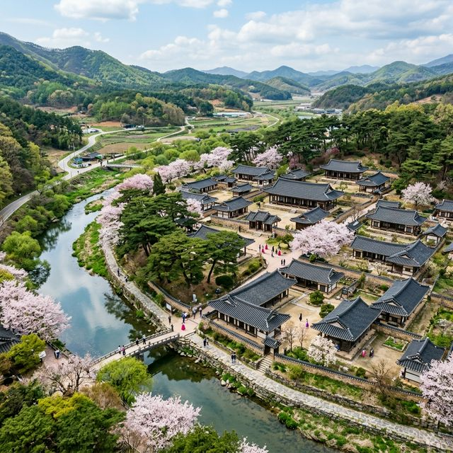
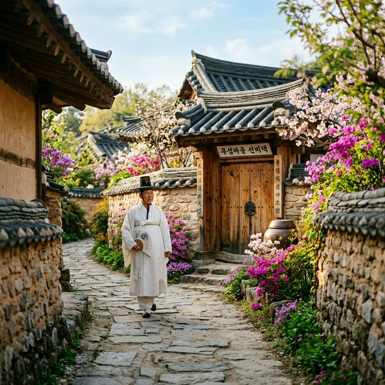
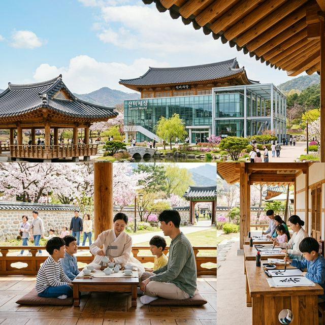

2026 영주 한국선비문화축제 일정 소수서원 선비촌 5월 대규모 가족 축제 완벽 가이드
"선비의 고장 영주에서 만나는 과거와 미래의 만남!"
따스한 5월의 햇살과 함께 경북 영주에서 대한민국 최고의 전통 문화 축제인 '2026 영주 한국선비문화축제'가 막을 올립니다. 유네스코 세계유산인 소수서원과 옛 선비들의
생활상이 그대로 살아있는 선비촌을 배경으로 펼쳐지는 이번 축제는, 단순히 과거를 회상하는 것을 넘어 현대인들에게 선비 정신의 진정한 가치를 전달하는 소중한 시간이 될 것입니다. 가족, 연인과 함께
고즈넉한 한옥 사이를 거닐며 힐링하고 싶다면 이번 영주 여행을 절대 놓치지 마세요.
1. 2026 영주 한국선비문화축제 개요 및 핵심 테마
올해로 제17회를 맞이하는 영주 한국선비문화축제는 "선비, 세대를 잇다 미래를 열다"라는 슬로건 아래 더욱 풍성하고 현대적인 감각으로 돌아왔습니다. 2026년 5월
2일부터 5월 5일까지 4일간 진행되는 이번 축제는 각지에 흩어져 있던 축제 공간을 순흥면 일대(소수서원, 선비촌, 선비세상)로 완벽하게 통합하여 방문객들의 몰입도를 극대화한 것이
특징입니다.
축제의 문을 여는 고유제를 시작으로, 전통의 명맥을 잇는 다양한 공연과 현대적인 미디어아트, 그리고 어린이날을 맞이한 특별한 체험 프로그램까지 세대를 아우르는 콘텐츠가 준비되어 있습니다. 특히 영주시는
이번 축제를 통해 '선비 정신'이 단순히 구시대의 유물이 아니라, 현대 사회의 갈등을 치유하고 배려와 존중의 가치를 확산시키는 미래지향적인 정신문화임을 강조하고 있습니다.
영주의 맑은 공기와 푸른 녹음 속에서 펼쳐지는 이번 축제는 바쁜 일상을 살아가는 현대인들에게 잠시 멈춤을 선물합니다. 5월의 황금연휴를 맞아 영주에서만 느낄 수 있는 품격 있는 휴식을 경험해 보시길
권해드립니다. 전통과 혁신이 공존하는 현장에서 여러분의 봄날을 더욱 특별하게 기록해 보세요.

영주 한국선비문화축제의 메인 무대, 소수서원 전경 / AI 제작 이미지
2. 유네스코 세계유산 소수서원에서 느끼는 학문의 깊이
영주 여행의 시작점은 단연 소수서원(紹修書院)입니다. 우리나라 최초의 사액서원이자 유네스코 세계문화유산인 이곳은 축제 기간 동안 가장 경건하면서도 아름다운 공간으로
변모합니다. 서원 입구의 수백 년 된 소나무 군락인 '학자수' 길을 걷다 보면, 과거 선비들이 학문에 정진하며 마음을 가다듬었던 그 기운이 고스란히 전해짐을 느낄 수 있습니다.
축제 기간 중 소수서원에서는 야간 개방이 진행되어 평소에는 볼 수 없었던 서원의 밤 풍경을 감상할 수 있는 특별한 기회를 제공합니다. 달빛 아래 조명이 밝혀진 강학당과
경렴정의 실루엣은 마치 한 폭의 수묵화를 보는 듯한 착각을 불러일으킵니다. 이곳에서 열리는 국악 공연과 풍류 음악회는 방문객들에게 잊지 못할 낭만적인 밤을 선물할 것입니다.
또한, 서원 내 소수박물관에서는 서원의 역사와 유림의 문화를 한눈에 볼 수 있는 특별 전시가 열립니다. 아이들에게는 우리나라 전통 교육 시스템의 우수성을 알려주고, 어른들에게는 삶의 지혜를 되새겨보는
뜻깊은 시간이 될 것입니다. 죽계천의 맑은 물소리와 함께 서원의 고즈넉한 정취에 흠뻑 빠져보시는 것은 어떨까요?
3. 살아있는 민속촌, 선비촌에서의 전통 생활 체험
소수서원 바로 옆에 위치한 선비촌은 영주 지역의 고택들을 그대로 재현하거나 옮겨놓은 살아있는 민속 마을입니다. 축제 기간 동안 선비촌은 거대한 연극 무대로 변신합니다.
마을 곳곳에서 '사또 놀이', '마당극 덴동어미 화전놀이' 등 당시의 삶을 해학적으로 풀어낸 공연들이 펼쳐져 방문객들의 흥을 돋웁니다.
단순히 구경만 하는 축제가 아니라 직접 참여하는 즐거움도 가득합니다. 선비의 복장인 한복을 입고 마을을 거닐며 전통 자수, 한지 공예, 다도 체험 등 다양한 선비 문화를 몸소 경험할 수 있습니다. 특히
선비촌 내 숙박 체험을 통해 실제 한옥에서 하룻밤을 보내며 새벽의 고요한 공기를 마시는 경험은 영주 축제의 백미 중 하나로 꼽힙니다.
마을 뒤편으로는 완만한 산책로가 조성되어 있어 5월의 싱그러운 꽃들과 함께 여유로운 시간을 보내기 좋습니다. 선비들이 즐겨 마셨던 차 한 잔의 여유를 즐기며, 현대의 빠른 속도에서 벗어나 느림의 미학을
실천해 보세요. 선비촌의 골목길마다 숨어있는 옛이야기들이 여러분의 발걸음을 멈추게 할 것입니다.

전통의 숨결이 살아있는 영주 선비촌 고택 거리 / AI 제작 이미지
4. 첨단 미디어와 전통의 융합, '선비세상'의 매력
축제의 한 축을 담당하는 '선비세상(Sunbee World)'은 K-문화의 핵심인 한식, 한복, 한옥, 한지, 한글, 한국음악 등을 테마로 한 첨단 K-문화
테마파크입니다. 이곳은 고루한 전통이 아닌, 최신 IT 기술과 미디어아트를 접목하여 젊은 세대와 외국인들도 흥미롭게 선비 문화를 접할 수 있도록 설계되었습니다.
선비세상의 각 테마관에서는 오감을 만족시키는 프로그램들이 운영됩니다. 한식촌에서는 영주의 특산물을 활용한 전통 요리 쿠킹 클래스가 열리고, 한지촌에서는 나만의 한지 제작 체험이 진행됩니다. 특히
어린이들이 좋아하는 인터랙티브 전시물들은 자칫 어려울 수 있는 전통 문화를 게임처럼 재미있게 이해할 수 있도록 도와줍니다.
축제 기간 동안 선비세상 야외 광장에서는 대규모 퍼포먼스와 드론쇼 등 화려한 볼거리도 예정되어 있습니다. 소수서원이 과거의 정취를 간직하고 있다면, 선비세상은 그 정신이 미래로 어떻게 연결되는지를
보여주는 공간입니다. 영주 축제가 전 세대에게 사랑받는 이유를 이곳에서 직접 확인해 보시기 바랍니다.
5. 역사 전문가 최태성과 함께하는 선비 아카데미
이번 축제에서 가장 기대되는 행사 중 하나는 역사 강사 최태성(큰별쌤)과 함께하는 선비 정신 강연입니다. 어려운 역사를 재미있고 명쾌하게 풀어주는 그의 강연은 이미 정평이
나 있죠. 이번 강연에서는 '2026년의 선비, 우리는 어떻게 살 것인가?'라는 주제로 현대 사회에서 선비 정신의 실천 방안을 제시할 예정입니다.
강연은 단순한 전달 방식이 아닌, 청중과의 소통을 중심으로 진행됩니다. 과거 선비들이 가졌던 청렴함과 절개, 그리고 주변을 돌보던 애민 정신이 오늘날의 공정(Fairness)과
상생(Win-win)이라는 가치와 어떻게 맞닿아 있는지를 심도 있게 다룹니다. 학생들에게는 올바른 가치관 형성을 돕고, 성인들에게는 삶의 방향성을 재점검하는 계기가 될 것입니다.
축제장에 마련된 특별 무대에서 진행되는 이번 아카데미는 누구나 자유롭게 참여할 수 있으나, 좋은 자리를 선점하기 위해서는 사전에 일정을 확인하고 일찍 도착하는 것이 좋습니다. 세대를 아우르는 지식의
향연 속에서 마음의 양식을 든든히 채워가는 유익한 시간을 보내보세요.
6. 밤의 운치를 즐기다, '선비 달빛야행'과 야시장
낮보다 아름다운 영주의 밤을 즐길 수 있는 '선비 달빛야행'은 축제의 하이라이트입니다. 은은한 조명이 설치된 소수서원과 선비촌을 가로지르는 산책로는 연인들에게 최고의
데이트 코스를 제공합니다. 야간 전용 프로그램을 통해 밤에만 느낄 수 있는 서원의 신비로운 분위기를 만끽할 수 있습니다.
또한, 영주 시내 문화의 거리와 연계된 도심 야시장은 식도락 여행자들의 필수 코스입니다. 영주 한우 육회, 정도너츠, 문어 숙회 등 지역의 맛있는 먹거리들이 가득하며,
지역 예술인들의 버스킹 공연이 밤늦게까지 이어져 축제의 열기를 더합니다. 전통 시장의 정겨움과 활기찬 축제 분위기가 어우러져 영주 여행의 즐거움을 배가시킵니다.
야경 사진을 남기기 좋은 포토존들도 곳곳에 마련되어 있어 가족, 친구들과 함께 추억을 담기에 부족함이 없습니다. 영주의 밤은 머무를수록 깊은 매력을 발산합니다. 당일치기보다는 1박 2일 일정을 통해
영주의 밤과 낮을 모두 경험해 보시는 것을 강력히 추천드립니다.

미래형 K-문화 테마파크, 선비세상에서의 가족 체험 현장 / AI 제작 이미지
7. 어린이날 맞춤형! '어린이 선비축제'와 문무과 시험
축제의 마지막 날이 5월 5일 어린이날인 만큼, 어린이들을 위한 대규모 이벤트가 준비되어 있습니다. 바로 '어린이 선비축제'입니다. 아이들이 직접 도포를 입고 갓을 쓴 채
과거시험장에 들어서는 모습은 그 자체로 이미 장관입니다. 문과 시험에서는 한글 붓글씨 쓰기나 짧은 시 짓기를 진행하며, 무과 시험에서는 활쏘기와 전통 무예 체험을 즐길 수 있습니다.
장원급제를 한 어린이에게는 실제 어사화를 씌워주고 기념 촬영을 하는 등 아이들의 자존감을 높여주는 특별한 경험을 제공합니다. 이는 단순한 놀이를 넘어 아이들이 우리 역사와 문화에 대해 자부심을 느끼게
하는 교육적인 효과도 큽니다. 축제장 곳곳에 설치된 에어바운스와 전통 놀이마당은 아이들이 마음껏 뛰어놀 수 있는 공간이 됩니다.
부모님들은 아이들이 안전하게 체험을 즐기는 동안 인근 쉼터에서 휴식을 취할 수 있습니다. 5월 5일 어디로 가야 할지 고민 중이신 부모님들께 영주 선비문화축제는 최고의 선택지가 될 것입니다. 아이들의
웃음소리가 가득한 영주에서 특별한 어린이날 추억을 만들어보세요.
8. 2026 영주 여행 실무 팁: 주차, 입장료, 교통 가이드
축제를 더 알차게 즐기기 위한 몇 가지 실무 팁을 정리해 드립니다. 우선 가장 중요한 주차 문제입니다. 축제 기간에는 소수서원 앞 주차장이 조기에 만차될 확률이 높습니다.
영주시에서 운영하는 셔틀버스를 이용하거나, 선비세상 인근의 대규모 임시 주차장을 활용하시는 것이 정신 건강에 이롭습니다.
입장료 혜택도 꼭 챙기셔야 합니다. 최근 인기를 얻고 있는 '디지털 관광주민증'을 발급받으면 영주 지역의 주요 관광지 입장료를 최대 50%까지 할인받을 수 있습니다.
대한민국 구석구석 앱을 통해 손쉽게 발급 가능하니 미리 준비해 두세요. 또한 영주 사랑 상품권을 활용하면 지역 내 식당과 시장에서 알뜰한 소비가 가능합니다.
식사는 예약이 필수입니다. 특히 한우로 유명한 영주인 만큼 유명 고깃집은 웨이팅이 길어질 수 있습니다. 현지인들이 추천하는 숨은 맛집이나 축제장 내 운영되는 향토 음식점 리스트를 미리 파악해 두시면
동선을 최적화할 수 있습니다. 5월의 일교차에 대비해 가벼운 겉옷을 준비하는 센스도 잊지 마세요.
9. 맺음말: 선비의 향기와 함께하는 5월의 힐링 여정
지금까지 2026 영주 한국선비문화축제의 다채로운 소식들을 전해드렸습니다. 영주는 단순히 관광지가 아니라, 우리 민족의 고결한 정신이 깃든 공간입니다. 이번 축제를 통해
선비들의 여유와 절개를 배우고, 지친 마음을 위로받는 시간이 되길 바랍니다. 전통의 향기가 가득한 영주에서의 4일은 올 한 해 가장 기억에 남는 선물이 될 것입니다.
가까운 하동의 찻물 향기와 강릉의 신명 나는 단오제 소식도 곧 들려오겠지만, 5월의 시작만큼은 영주의 선비 정신과 함께 열어보시는 것을 추천합니다. 깨끗한 선비의 마음으로 돌아가는 이번 여행, 지금
바로 계획해 보세요!
#영주한국선비문화축제
#2026축제일정
#소수서원
#선비촌
#선비세상
#영주가볼만한곳
#5월축제추천
#어린이날가볼만한곳
#가족여행추천
#디지털관광주민증